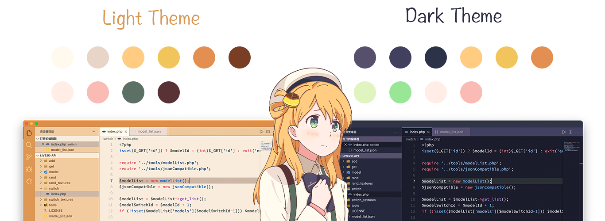

Pudding VSCode Theme
A Pudding Color Theme for Visual Studio Code.
Developer
Haoning Wu
1. Pudding Theme
The Visual Studio Code Pudding Theme currently comes in two colorways, a Light Theme and a Dark Theme.
2. Color Scheme
The color scheme of this theme comes from the original cartoon character, Pudding. The colors in the painted image of Pudding were extracted and then used to develop this pudding theme.
Since this color scheme was originally intended for painting, there may be some problems with inappropriate colors when applied to program themes such as Visual Studio Code, and subsequent updates will be made to optimize and adjust the best style of the theme.
3. Install
- Go to VS Marketplace.
- Click on the "Install" button.
- Then select a theme.
4. License
The code is available under the MIT license, but not including characters.
Pudding character are copyrighted to the author: Haoning Wu.